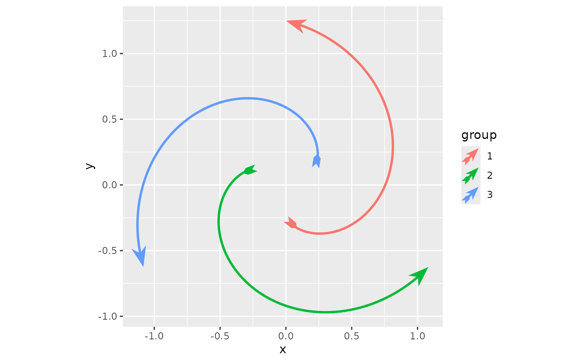
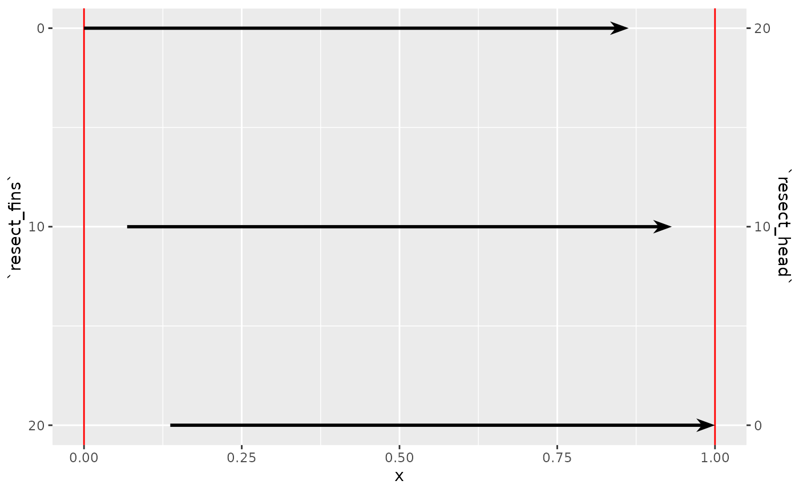

The ggarrow package uses ggplot2’s extension capabilities and grid to
place arrows. Using ggarrow is not that different than using ggplot2,
because it follows ggplot2’s conventions. As with any ggplot, you can
add layers to the plot and instead of using geom_path()
from ggplot2 itself, you can drop-in geom_arrow() instead.
If this is unfamiliar territory for you, I’d point you to some
introductory reading first, like the ggplot2 book or R for Data
Science.
library(ggarrow)
#> Loading required package: ggplot2
whirlpool <- whirlpool(3)
ggplot(whirlpool, aes(x, y, colour = group)) +
geom_arrow() +
coord_equal()
There are a series of options to customise the arrows, and these are more fully described in the arrow parameters vignette. Here, we quickly go through three more salient options.
The first option is that you can use different types of arrows at the ends of the path, which are called ‘arrow ornaments’. There are various options of setting these, which are more thoroughly described in the arrow ornaments vignette.
ggplot(whirlpool, aes(x, y, colour = group)) +
geom_arrow(arrow_head = "head_wings", arrow_fins = "fins_feather",
length_head = 6, length_fins = 6) +
coord_equal()
The second option is that you can vary the line width of an arrow
path by using the linewidth aesthetic.
ggplot(whirlpool, aes(x, y, colour = group)) +
geom_arrow(aes(linewidth = arc)) +
scale_linewidth_identity() +
coord_equal()
And the last option you might want to know about is the ‘resect’ option. It shortens the path by some space so that you can easily avoid touching other graphical objects that the arrows might be pointing away from or pointing towards.
df <- data.frame(
x = rep(c(0, 1), 3),
head = rep(c(0, 10, 20), each = 2),
fins = rep(c(20, 10, 0), each = 2)
)
ggplot(df, aes(x, head, group = head)) +
geom_vline(xintercept = c(0, 1), colour = "red") +
geom_arrow(aes(resect_head = head, resect_fins = fins)) +
scale_y_continuous(
name = "`resect_head`",
breaks = unique(df$head),
position = "right",
sec.axis = dup_axis(
name = "`resect_fins`",
labels = unique(df$fins)
)
)